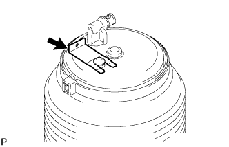
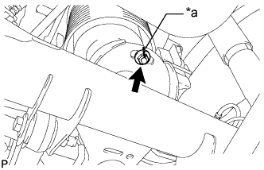

ЗАДНИЙ ПНЕВМОЦИЛИНДР (для моделей с пневматической подвеской) > СНЯТИЕ |
| 1. СНИМИТЕ ЛЕВЫЙ ЗАДНИЙ ПНЕВМОЦИЛИНДР В СБОРЕ |
Поддомкратьте автомобиль и установите раму на опоры.
Отсоедините трубку регулировки высоты (Нажмите здесь).
|  |
Снимите фиксатор сверху пневмоцилиндра.
|  |
Нанесите метки на гайку и задний пневмоцилиндр.
| *a | Метка |
Отверните гайку.
Выпустите воздух из пневмоцилиндра, чтобы втянуть пневмоцилиндр.
Снимите задний пневмоцилиндр с кожуха задней полуоси.